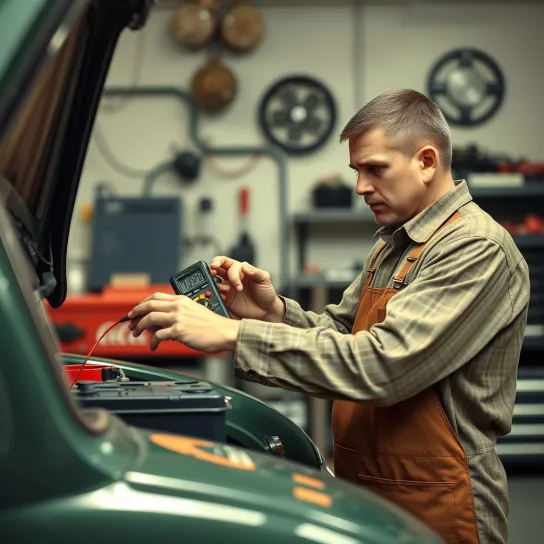
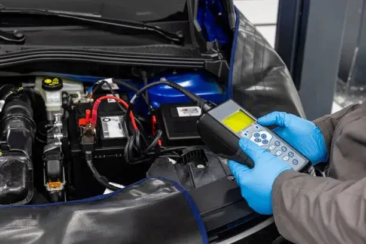
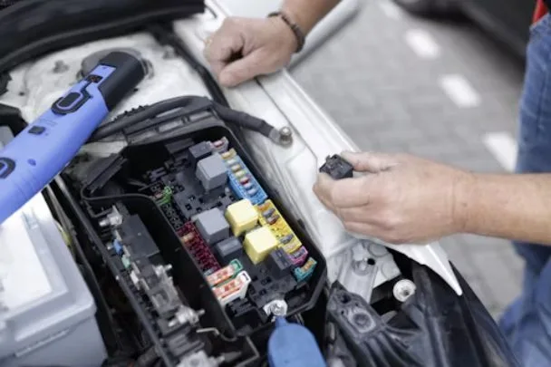

La Batería: El corazón eléctrico de tu vehículo que no puedes descuidar
Publicado el

Un mantenimiento adecuado puede prolongar su vida útil y evitar inconvenientes en el momento menos esperado. A continuación, te ofrecemos una guía con los mejores consejos para revisar y cuidar la batería de tu vehículo.
¿Por qué es importante revisar la batería?
La Batería es la encargada de suministrar la energía necesaria para el arranque del motor y el funcionamiento de los sistemas eléctricos del vehículo. Con el tiempo, su rendimiento puede verse afectado por factores como el uso, el clima y la calidad de los componentes. Una batería en mal estado puede provocar fallos inesperados e incluso dañar otros sistemas del vehículo.


Pasos para la revisión de la Batería
Realizar una inspección periódica de la batería es clave para asegurarte de que está en óptimas condiciones. Aquí te dejamos los pasos esenciales:
1. Inspección visual: Verifica que la batería no tenga corrosión en los bornes o cables. La presencia de residuos puede afectar la conexión y el flujo de energía.
2. Comprobación del voltaje: Utiliza un multímetro para medir el voltaje de la batería. En condiciones normales, debería estar entre 12.4V y 12.6V cuando el motor está apagado.
3. Estado de los cables y conexiones: Asegúrate de que los cables estén bien ajustados y que no haya señales de desgaste o rotura.
¿Cuándo reemplazar la batería?
Si notas que el arranque del vehículo es más lento, las luces se atenúan o que la batería tiene más de tres años de uso, es momento de considerar su reemplazo. Escríbenos para saber qué batería tenemos para tu vehículo.
CORCAUCHOS: Baterías en Barquisimeto
En CORCAUCHOS, nos especializamos en ofrecer productos y servicios de calidad para el mantenimiento de tu vehículo. Si necesitas asesoría o un cambio de batería, no dudes en visitarnos en Barquisimeto. ¡Tu seguridad y comodidad en la carretera son nuestra prioridad!

¿Necesitas este servicio en Barquisimeto? Escríbenos y te atendemos.
Escríbenos por WhatsApp